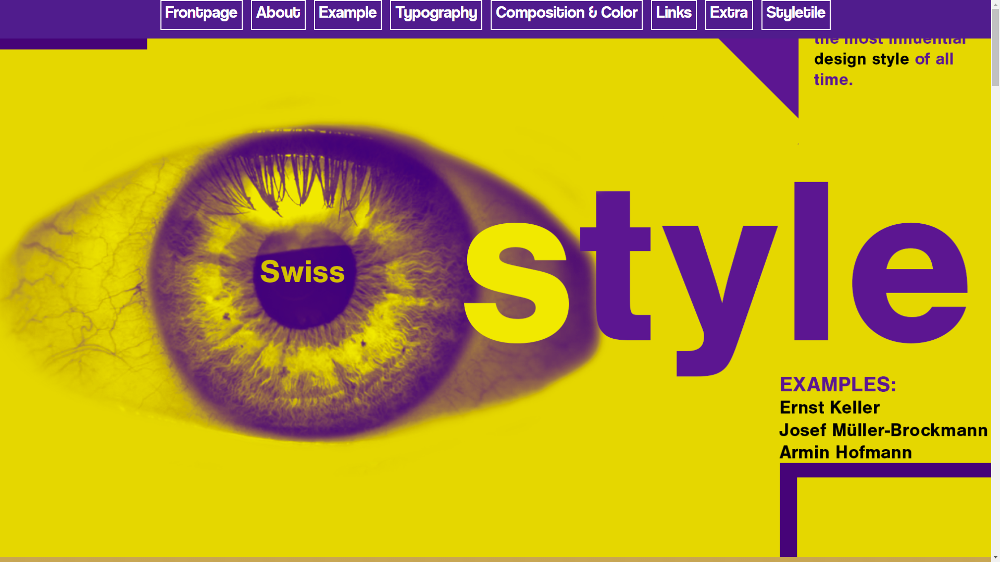
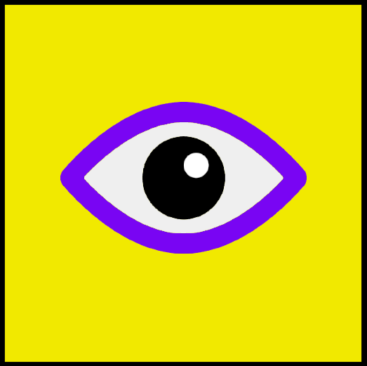
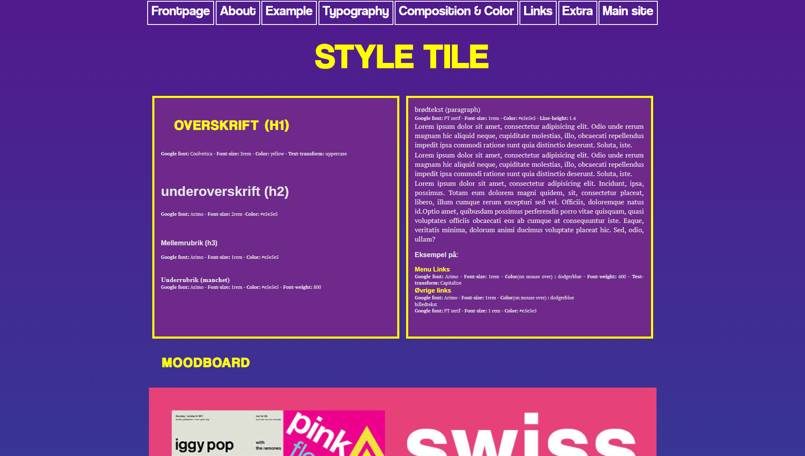

Stilartssite
Stilartsitet var produktet af en længere læringsproces under Tema 1 på første semester af min MMD uddannelse. Temaets formål var at give en god forståelse for brugergrænseflade udvikling, og give de redskaber der skal udgøre fundamentet for resten af min uddannelse på MMD.
Under temaet blev vi introduceret for faglige begreber for både design så vel som hjemmesidekodning. Ord som “grids”, “symmetri”, “kontrast”, “anchorlink” og “h1’er” blev alle en del af mit hverdagssprog og er det stadig i dag. Temaet bød også på videoundervisning af Sean Adams, som gav os en kæmpe viden inden for både layout og positionering i den digitale medieproduktion. Samtidgit med vores layoutundervisning lavede vi øvelser i fotoredigeringsprogrammet PhotoShop, og opsatte vores layout i InDesign.
Al undervisningen, virtuel som fysisk, endte til sidst ud i at vi i løbet af 4 uger havde lavet et simpelt website med få undersider. Websitets indhold skulle bestemmes af en tildelt design stilart. Jeg blev tildelt stilen “Swiss style” som arbejder med simple designs opsat i “grids”. Swiss style er en stil art jeg kommer til at få meget inspiration fra i mine fremtidige projekter, og selvfølgelig også havde en stor betydning for det endelige resultat af dette projekt.
Klik på billedet til højre for at se mit projekt.

Fav-icon til Sitet

Moodboard til Sitet

Mit første Styletile
